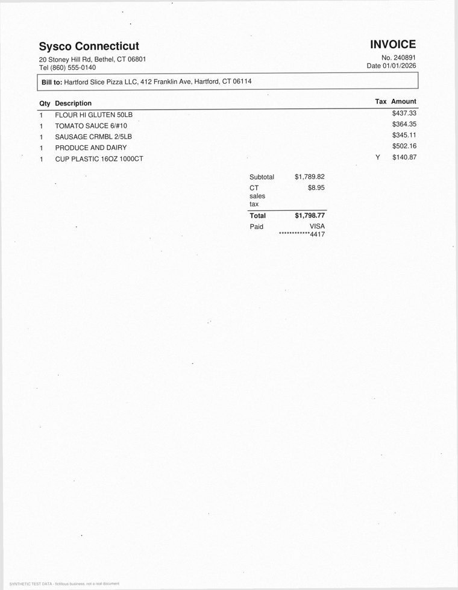

What's new (2026-10-02)
| Change | What it gives you | Section |
|---|---|---|
| Input docs screen | Pick live and/or sandbox documents and see each scan next to its extracted data and where it landed in the ledger, the statements and the tax worksheets; save feedback as JSON and re-process. | Input docs |
| New look on every screen | Navy RAG Champ top bar, centered menu, light-yellow overview box with key figures, light-blue headers, striped tables; yellow column headers with column borders on the Dashboard, Ledger, Reconcile, Reports and OS-114 tables. | The look of every page |
| Ledger trail page | Every change ever made to the ledger (posted, reversed, reinstated, months closed and reopened), with when, from which screen and why. Stored in the books, append-only. | Ledger trail |
| Undo a reversal | Reverse on a reversal row posts the original entry again; a yellow help box on the Ledger explains it. | Ledger |
| Docs page | A user's guide inside the app, from setting up the business to the CPA package, with the books' progress at the top. | Docs |
| Tax form column | The Dashboard's Next tax dates now shows Date · What is due · Tax form (e.g. OS-114, Form 1040-ES, CT-1040ES). | Dashboard |
| Connecticut only | Stated in the guide: the tax worksheets assume the business operates solely in Connecticut. | Taxes |
Table of Contents
1. What the App Does
Code: C:\Daya\RAGchamp\SMALL-BIZ-ACCTG\Web-App. Start it with python app.py and open http://127.0.0.1:5050. It needs Python 3.12 and the Claude Code CLI logged in (C:\Users\dayam\.local\bin\claude.exe). No API key is needed: Claude runs on your Claude Code plan.
The app is a bookkeeper's assistant built on three rules from the plan (INFO\SMALL-BIZ-ACCTG-MVP1-PLAN.md):
- P1: Claude proposes, code disposes. Claude reads documents and suggests entries. Code checks every figure, every balance and every match before anything can be posted.
- P2: Nothing is posted without the owner. Every proposal waits on the Review screen until you Accept it (or bulk-accept the safe ones).
- P3: Everything is traceable. Every ledger line links back to its document, its page image, the JSON Claude read from it, and the exact prompt and reply of every Claude call.
The menu across the top has eleven screens. In order of the work they are: Setup (once), Inbox → Review → Ledger → Reconcile → Reports → Taxes, with Dashboard as the home page, Input docs to check any document and give feedback on it, Test data for synthetic practice data and Docs, the user's guide. The Ledger trail page is reached from the Ledger.
The business the app assumes (MVP 1)
| Topic | Setting |
|---|---|
| Entity | Single-member LLC, disregarded: Schedule C + Schedule SE on the owner's 1040, CT-1040. |
| Books | Double entry, accrual basis, amounts kept as integer cents. Books start 2026-01-01. |
| Sales | Square POS (in-store, own delivery, delivery fees), plus DoorDash, Uber Eats and Grubhub. |
| Sales tax | CT 7.35% on meals (6.35% general). Platforms collect and remit tax on their own sales (marketplace facilitator). |
| Fixed assets | Items at or over $2,500 are capitalized (decision D9); smaller items are expensed. |
| Taxes | The app prepares draft worksheets for a CPA. Nothing is e-filed (decision D10). |
| Where | Connecticut only: the business sells, collects sales tax and owes state income tax only in CT (Hartford), with no locations, registrations or employees in other states. |
2. Live Books vs. Sandbox (the top-right switch)
The dropdown at the top right of every screen chooses which set of books is open. The app can hold several completely separate sets of books. Each one is a folder with its own database (books.db) and its own stored documents:
The layout of every screen is explained in The look of every page.
| Live books | Sandbox: <name> | |
|---|---|---|
| What it is | The real business's books. | A practice copy of the business filled with synthetic test data that the generator made (fake but realistic scanned documents). |
| Folder | Web-App\data\live\ | Web-App\data\sandbox\<name>\ (also holds answer_key.json) |
| What it accepts | Only real documents. A file stamped SYNTHETIC TEST DATA is refused. | Only generated test files. A real document is refused, so real paperwork can never end up in a test. |
| Claude | Always live: real claude -p calls (uses your plan). | replay (default, free): Claude's answers are taken from the answer key, or live: real calls on the fake documents, to test how well Claude actually reads them. |
| How you know | The books dropdown on the right of the menu says Live books; no orange bar. | An orange bar under the top bar of every page, and the dropdown says Sandbox: <name>. Reports also say SANDBOX - synthetic data. |
Every screen (Dashboard, Inbox, Review, Ledger, Ledger trail, Reconcile, Reports, Taxes, Setup, Docs) works on whichever books are open; only Input docs reads live and sandbox documents side by side without switching. Switching does not copy or change anything: it just points the app at a different folder.
Why it can feel confusing, and what to remember
- At the time of writing (2026-10-02) the app opens in the sandbox.
data\active.jsonsaysjan-2026-scanned, a simulated January with 74 files / 74 documents, all booked (147 journal entries: 146 postings and one reversal made while trying the Ledger trail). The live books are empty (0 files, 0 entries). So the numbers you see on Dashboard and Reports are synthetic. - The choice is app-wide, not per browser tab. It is saved in
data\active.json. If you switch in one tab, other open tabs show the new books on their next reload. - Switching always takes you to the Dashboard of the books you picked.
- The replay/live mode belongs to the sandbox, not to the dropdown. Change it on the Test data screen (the small replay / live selector beside each sandbox). The orange bar tells you which is active.
- "Load the sandbox's generated files" (Inbox, only shown in a sandbox) empties that sandbox first, then reloads all its files from scratch. Use it to replay the month by hand; don't use it if you want to keep what you reviewed there.
Rule of thumb
Use a sandbox to learn the screens and test the agent; nothing there can touch the real books. Switch to Live books only when you're entering the shop's real paperwork. To get back from a sandbox, use the dropdown or click Back to the live books in the orange bar.
3. The Look of Every Page
Every screen follows the same pattern (plan: INFO\UI-REVAMP-PLAN.md, spec S-PAD\UI-design-specs.pdf):
0
$62,847.30
$22,204.29
$62,705.06
| Next tax dates | ||
|---|---|---|
| Date | What is due | Tax form |
| 2026-10-31 | OS-114 sales tax for 2026-09 | OS-114 CT DRS |
| Part | Look and behaviour |
|---|---|
| Top bar | Navy, the RAG Champ logo on the left (it links to the Dashboard), SMALL BUSINESS ACCOUNTING AGENT in yellow italic on the right. It scrolls away. |
| Sandbox bar | Orange, centered text, only in a sandbox, between the top bar and the menu. |
| Menu | Links centered, the Live books / Sandbox dropdown on the right edge. It stays on screen when you scroll. On a phone it folds behind a ☰ button. |
| Overview box | Light yellow: the page title and a one-line description, the page's main buttons on the right (filters too, on Review, Ledger, Reconcile, Reports, Input docs), and small tiles with the page's key figures (e.g. Inbox: files waiting, to propose, to review, Claude calls; Taxes: OS-114 due, books vs computed tax, Schedule C profit, SE tax; Setup: opening balances posted ✓/✗). |
| Cards and tables | Card titles in light blue; record tables striped with a hover highlight. Column-header rows are light yellow with column borders on the Dashboard's Next tax dates, the Ledger, Ledger trail, Reconcile and Reports tables and the OS-114 worksheet. Financial statements and debit/credit entry tables are not striped, so they read like printed statements. |
| Help boxes | Light-yellow notes inside a page, e.g. Reversed an entry by mistake? on the Ledger. |
| Dark mode | Follows the Windows setting; the yellow and blue have darker versions. |
| The bars, menu, buttons and help boxes are left out. |
All colours live in static\app.css (tokens such as --sba-overview-bg, --sba-head-bg); the overview box and tiles are the Jinja macros ui.overview and ui.tile in templates\_ui.html. Restart is not needed after a style change: refresh with Ctrl+F5.
4. The Whole Cycle at a Glance
Inbox screen upload PDF/CSV or drop into SMALL-BIZ-ACCTG\Inbox\ and click ↻
|
| ingest/intake.py SHA-256 of the file -> refused if already added (any file name)
| synthetic-data guard (live books vs sandbox)
| stored as data\<books>\documents\2026\<sha16>\original.pdf
| one PNG per page: page-001.png ... (200 dpi for scans)
|
| ingest/extract.py PDF -> Claude call "extract" (page images, or the PDF's text layer)
| one call finds EVERY document in the file and transcribes it
| CSV -> ingest/csv_import.py (Square / bank / card exports, no Claude)
| ingest/checks.py code checks each document's own arithmetic -> flags (error / warn / info)
| statement continuity: opening = last closing, no missing month
|
| books/match.py open items on clearing accounts -> MATCH HINTS
| books/propose.py Claude call "propose" (the Bookkeeper) -> journal entries JSON
| code checks: balanced, real accounts, ties to the document, hints obeyed
| (live mode: one automatic retry with the errors)
|
Review screen Accept / Edit / Feedback... (Claude call "revise") / Reject / Bulk accept
| books/review.py checks again against today's ledger, then posts
| books/post.py journal_entries + journal_lines (never edited, only reversed)
|
Reconcile books/reconcile.py statement closing balance vs GL (1010 bank, 2100 card), close month
Reports reports/statements.py Income Statement, Balance Sheet, Cash Flow, Equity, TB, GL
Taxes tax/sales_tax_ct.py tax/federal.py tax/ct_income.py + tax_rules\2026\*.yaml
/api/cpa-package -> zip for the CPALong steps (extraction, the Bookkeeper, feedback, test data) run as background jobs. A small "Working…" card appears at the bottom right with a progress bar and a cancel link; the page reloads when the job finishes.
5. File & Document Statuses
A file is what you upload (one PDF or CSV). A document is one receipt, statement, check, etc. found inside it. One scanned page with three receipts is one file and three documents.
File status (Inbox)
| Status | Meaning |
|---|---|
| new | Stored, page images made, not extracted yet. |
| extracting | Claude (or the CSV importer) is reading it. |
| extracted | Its documents are in the list. |
| failed | The error is shown under the file name. Click Extract or Re-extract (higher dpi). |
Document status (Inbox badge, Review, Dashboard)
| Internal | Shown as | Meaning |
|---|---|---|
extracted | to propose | Read and checked; the Bookkeeper has not run yet. |
proposed | to review | A proposal passed every code check and waits for you. |
needs_review | needs attention | The proposal failed a code check (shown in red ✗). Edit it, give feedback, or fix the extraction. |
posted | posted | Accepted; its entries are in the ledger. |
support | linked (support) | Already booked from another document (e.g. the card statement booked it first). It is linked as evidence; nothing is posted twice. |
rejected | rejected | You rejected it (with a reason), or it was a non-financial page or a VOID check. |
6. Screen: Dashboard
The home page (/) of the open books. It only shows things; it never changes the books.
| Part | What it shows |
|---|---|
| Overview box (yellow) | Business name, address and books period; buttons Add documents (goes to Inbox) and Review N (the number of documents waiting); the four tiles below. Each tile links to its screen. |
| Four tiles | To review (how many need attention, how many questions) · Sales for the latest month with sales, with food cost % (watch 25–35%) · Net income that month and year to date · Bank (GL) with cash on hand, card balance owed and sales tax owed. |
| Work to do | A striped list: files waiting or failed; documents to propose; proposals to review; proposals that need attention; questions from the Bookkeeper; rules suggested from your feedback; posted · linked · rejected counts. Each number links to the right screen or filter. |
| Unmatched items older than 45 days | Money sitting in a clearing account too long, e.g. a receipt paid by card whose card statement line never arrived (see Section 20). |
| Next tax dates | The next six dates from the tax calendar, in three columns with a yellow header row and column borders: Date · What is due · Tax form (the form, e.g. OS-114, Form 1040-ES, CT-1040ES, Personal property declaration, with who it is filed with underneath: CT DRS, IRS, CT). The form names come from the form: field of each date in tax_rules\2026\federal.yaml and ct.yaml. |
| Footer | Number of Claude calls and their cost at API rates (in replay mode, $0) and a Download a backup link (a zip of the whole books folder). |
7. Screen: Inbox (scans in, extraction)
Where documents enter the books. The overview box shows files waiting or failed, documents to propose, proposals to review and Claude calls (with their cost), and holds the ↻ Process the inbox and Run the Bookkeeper on documents still to propose buttons. Two ways in:
- Upload scans or exports: choose one or more PDF / CSV files and click Add. Leave run the Bookkeeper after extraction ticked to go straight to proposals.
- Inbox folder: drop files into
C:\Daya\RAGchamp\SMALL-BIZ-ACCTG\Inbox\and click ↻ Process the inbox (N waiting). Added files move toInbox\processed\; refused ones go toInbox\refused\with a.txtsaying why.
What happens to each file, in order:
- Dedupe: the file's SHA-256 is compared with every file already in the books. The same scan is never added twice, even under a different name ("…was already added on 2026-01-05 as … (file #12)").
- Guard: synthetic files are refused in the live books, and real files are refused in a sandbox.
- Store & render: the original is copied to
documents\2026\<sha16>\original.pdfand each page becomespage-001.png, … (200 dpi for scans, 110 dpi for a downloaded text PDF, where the image is only for you to look at). - Extract (background job): one Claude call per PDF finds every document in it and transcribes each one to JSON (Section 18 shows a real example). CSV exports are parsed exactly by code with no Claude call.
- Check: code checks each document's arithmetic and adds flags.
- Propose (if ticked): the Bookkeeper runs on each new document, in upload order.
The Files table
| Column | Meaning |
|---|---|
| File | The file name: click it to open the original PDF in a new tab. Below it: PDF/CSV, scanned (no text layer), synthetic, when it was added, and any error. |
| Pages · Status | Page count; file status (Section 5). |
| Documents found | Every document Claude found in the file: type, party, date, total and its status. Click a document to open it on the Review screen. |
| Claude | Number of Claude calls for this file, their cost and the seconds they took. |
| Buttons | Extract runs extraction again. Re-extract (higher dpi) renders the pages at 300 dpi first, for faint or small print. CSV files show Import. Re-extracting is refused once a document of that file is booked: reverse its entries first. |
Above the table: Run the Bookkeeper on documents still to propose (for when you unticked the box, or a run was cancelled). In a sandbox there is also Load the sandbox's generated files (resets the sandbox, see Section 2).
Document types Claude recognises
Each has a JSON schema in Web-App\schemas\ that tells Claude which fields to fill.
| doc_type | Shown as | Code checks after extraction |
|---|---|---|
purchase_receipt | Receipt | item lines = subtotal; subtotal + tax + tip = total; tax rate is 6.35% / 7.35%; taxable items with no tax (possible use tax); payment method shown |
credit_card_statement, bank_statement | Card / Bank statement | opening + transactions = closing; transaction dates inside the period; opening = previous closing; no missing month |
check | Check | amount in figures = amount in words; VOID → nothing to post |
cash_log | Cash sheet | cash sales + tax = total written; tax is 7.35%; always "handwritten: confirm every figure" |
pos_report | Square report | in-store + delivery + fees = gross; gross − discounts − comps − refunds = net; net + tax + tips = collected; card − fees = deposit |
platform_statement | Platform statement | subtotal − commission − marketing − promotions + adjustments = payout |
payroll_report | Payroll report | gross − withholding = net pay; gross + employer taxes = total debit |
other / not_financial | Other / Not financial | "review closely" / rejected automatically |
Any figure Claude could not read is written as [?] (it is told never to guess) and becomes a red error flag you must confirm before posting.
8. Screen: Review (proposals, accept / edit / feedback)
The screen where you spend most of your time. It has three columns:
Sysco Connecticut 2026-01-01
high
Nutmeg Business Visa
check question
001-2026-01-01-purchase-receipt-sysco….pdf · page(s) 1
| 5010 | 1,648.95 | |
| 5030 | 149.82 | |
| 2150 | 1,798.77 |
1 The queue (left)
Every document still to propose, to review or needing attention, in the order the files were added. The filters All, Questions (the Bookkeeper asked you something), Attention (a failed check) and the Bulk accept button sit in the yellow overview box at the top, with four tiles: in the queue, with questions, need attention, safe to bulk accept. Badges: to propose check question high (high confidence, no errors). Bulk accept N safe proposal(s) accepts every proposal with high confidence, no failed checks and no questions.
2 The document (middle)
The document type, number and party; the file name links to the original PDF; the page numbers it sits on; its status. Then the page image(s) exactly as Claude saw them. Under the image, Extracted data and checks opens to show every flag and the full JSON Claude read. You can correct a figure in the JSON and click Save corrected figures and re-check. The checks run again and the old proposal is dropped, so run the Bookkeeper again. (A CSV document shows "imported exactly, without Claude" instead of an image.)
3 The proposal (right)
- Header: confidence (high / medium / low), version and source (
claude,replay,revised,manual). Refresh ↻ appears when entries were posted after this proposal was made (for receipts, statements and checks, a new posting can change the match hints). - Why: Claude's one-sentence reason. ⇄ match hints in green, ❓ questions in yellow, ✗ failed code checks in red.
- Support only (green box): the document was already booked from another one; accepting just links it.
- The entries, each with debits, credits and "balanced".
- If the extraction has a red error flag, tick I checked the flagged figures against the document before Accept will work.
| Action | Key | What happens |
|---|---|---|
| Accept | A | Code checks the proposal again against the ledger as it is now, posts the entries, records the matches and moves to the next document. |
| Edit | E | The entries become editable (account, debit, credit, date, + line, ×). Accept then posts your version, after the same checks. |
| Feedback… | F | Write up to 400 characters ("The TV was personal", "Split: $40 was cleaning supplies", "Always book CVS to 6310"). Claude (the Reviser) makes a new version. If your feedback is a general instruction, a blue box asks Remember this rule?: Yes, always saves a vendor rule (Setup) that the Bookkeeper follows from then on. |
| Reject | Asks why (not business, duplicate, unreadable, prior year…). A rejected document can be put back in the queue. | |
| Next / previous | J / K | Move through the queue. |
A blue note says when earlier documents are not reviewed yet. Review in order, so a receipt is booked before the card statement that pays it and the statement can recognise it. Proposal history at the bottom lists every version and your feedback.
9. Screen: Ledger
The General Ledger / Journal: every posted entry, newest first (up to 400). The overview box holds the filters and four tiles: entries in the period (and how many reversed), total debits, total credits and debits = credits ✓. The tables have yellow column headers and column borders.
- Filters: a date range, an account, and a text search on memo / party. Choosing an account also shows that account's running ledger (opening, each line, balance, closing).
- Each entry: number, date, kind (
document,opening,manual,adjustment,reversal), memo, its lines, and under Source a link to the document on the Review screen and an image link to the original PDF. From any ledger line you can get back to the paper it came from. - Reverse: posted entries are never edited or deleted (the database refuses). To correct one, reverse it: a new entry with the debits and credits swapped (kind reversal, "of #N"; on the original date or one you give). The original is shown struck through. Then post the right entry, or put the document back through Review.
- Undo a reversal: reversal rows have a Reverse button too. Clicking it posts the original entry again as a new entry (same lines, kind, document and, by default, the original date), marked undoes #reversal; the reversal is then struck through as well and the books are back where they were. Links the original had (e.g. settled by a card statement line) carry over, so it does not turn into an open item. A reversal can be undone only once, and only in an open month. A light-yellow help box under New manual journal entry explains this on the page.
- Ledger trail →: the link next to Entries (N) opens the Ledger trail, every change ever made to the ledger.
- New manual journal entry: for things that have no document, such as the year-end inventory count or corrections. It shows a running balanced / not balanced check. The section also suggests the month's straight-line depreciation for capitalized assets, with a Post it button.
Every posting is checked: the entry balances to the cent, every account exists and is active, the date is not before the books start, and the month is not closed.
10. Screen: Ledger Trail
/ledger-trail, opened from Ledger trail → next to Entries on the Ledger. It lets anyone review every change made to the ledger, newest first.
| Change | Badge | Recorded as coming from, e.g. |
|---|---|---|
| An entry posted | Posted | Review: proposal accepted / edited entries accepted / bulk accept, Ledger: new manual journal entry, Ledger: suggested depreciation, Setup: opening balances, Test data: sandbox reset |
| An entry reversed | Reversed | Ledger: Reverse button, Input docs: re-process (re-propose / re-extract / corrected figures); the row says which entry it undoes |
| A reversal undone | Reinstated | Ledger: Reverse button (undo a reversal); "undoes reversal #N" |
| A month closed / reopened | Month closed Month reopened | Reconcile: Close month (or … with an override note), Reconcile: Reopen month, with the reason given |
- Each row: when it was changed, the change, the entry number (and the entry it undoes), the entry date, memo and reason, the amount, the lines (expand N line(s) for the debits and credits), the origin and the linked document.
- Overview: tiles for changes recorded, entries posted, entries reversed (and reversals undone), months closed / reopened; filters for the date of the change, the kind of change and text (memo, origin, account, entry or document number); CSV download.
- Storage: table
ledger_trailin each set of books (books\trail.py). The row is written in the same transaction as the change, so trail and ledger always agree. Triggers make it append-only: the database refuses to edit or delete a trail row, like the journal itself. - Older books: the first time a set of books is opened after the trail was added, it is back-filled once from the journal (each entry's posting time) and the closed months, marked (back-filled) — recorded before the ledger trail existed.
The Setup screen's Audit log still records every action in the app; the Ledger trail is the focused, permanent record of what changed the books.
11. Screen: Reconcile & Month Close
Proves the books agree with the bank and the card company, one month at a time. The overview box holds the month buttons (🔒 = closed), the Close / Reopen button and tiles for the bank and card differences (✓ / ✗), the open items and the month's status. The two tables have yellow column headers and column borders.
- Left: for 1010 Business checking and 2100 Business credit card, the closing balance printed on that month's statement vs the GL balance at month end, and the difference. ✓ = reconciled, ✗ = a difference, or "no activity". The statement links to its document.
- Right: open items on the clearing accounts: receipts waiting for their card line, Square sales waiting for the payout, platform payouts, undeposited checks and cash, payroll not yet debited.
- Close <month> (green) appears when both reconcile. After closing, nothing can be posted into that month. Close with an override note lets you close anyway with a written reason (audit-logged). Reopen also asks why.
A difference usually means a statement line has no entry yet, a document is still in the Review queue, or the statement itself has not been added.
12. Screen: Reports (financial statements)
Six reports, each computed by reports\statements.py from the posted ledger at the moment you open it. Claude is never involved. The report buttons, dates and Show sit in the overview box; CSV downloads it, Print prints it without the menus. The default period is the books start to the end of the latest month with an entry. Each report has a yellow column-header row with column borders: Line | period (the Balance sheet: As of the end date; the Income statement with comparison adds Prior year); sections such as Revenue and Cost of goods sold are light-blue rows; totals are bold.
| Report | Contents | Self-check shown under it |
|---|---|---|
| Income statement | Revenue by account → gross sales → less discounts / comps / refunds → net sales → cost of goods sold (with COGS % and food & beverage cost %) → gross profit → operating expenses → net income. Optional vs prior year column. | |
| Balance sheet | Assets (current, fixed), liabilities, owner's equity including this year's net income. | ✓ The balance sheet balances. |
| Cash flow | Indirect method: net income adjusted for non-cash items and working capital; investing; financing; opening balances; net change; cash at start and end. | ✓ Ending cash equals the GL cash accounts (1000, 1010, 1020). |
| Owner's equity | Opening, opening balances, contributions, net income, draws, closing. | |
| Trial balance | Every account's debit or credit balance at the end date. | ✓ Debits equal credits. |
| General ledger | Every account with opening balance, each line (linked to its document) and running balance. |
The note at the bottom says it: Computed from the posted General Ledger by code, never by Claude. Every line traces to its entries and source documents.
13. Screen: Taxes
Draft tax worksheets built from the ledger (marked DRAFT worksheets). The tax rates and thresholds come from Web-App\tax_rules\2026\*.yaml, which are marked not yet verified until checked against the 2026 forms. Each account in the Chart of Accounts carries its Schedule C line, which is how ledger balances land on the form. The overview box shows tiles for the month's OS-114 amount due, books vs computed tax, Schedule C net profit and self-employment tax, with the Download the CPA package button.
Connecticut only: the worksheets assume the business operates solely in Connecticut (sales, sales tax and state income tax only in CT, Hartford here). A business that also operates in other states needs those returns prepared separately with the CPA.
| Tab | What it builds |
|---|---|
| CT sales tax (OS-114) | For a chosen month: gross receipts (all sales incl. own delivery fees and platform sales) → less marketplace-facilitator sales (the platforms remit that tax) → less discounts / comps / refunds → taxable receipts at 7.35% → tax due, plus use tax on untaxed purchases → total due. It compares that with the tax collected per the books (account 2200) and shows the difference, flags and open questions. The worksheet table has a yellow header row (Line | Amount | Source) and column borders. Save this worksheet stores a snapshot. |
| Schedule C / SE | Every Schedule C line with the accounts it came from; Part III (cost of goods sold, with inventory); Part V other expenses; Schedule SE (92.35% × profit, social security and Medicare parts, the deductible half); a 1040-ES estimate helper; questions before filing; and accounts with activity but no Schedule C line. |
| Fixed assets (4562) | The asset register (items at or over the $2,500 threshold), placed-in-service dates, cost, links to the receipts, book depreciation posted. |
| 1099-NEC | Service payees paid by check or bank transfer (card payments excluded), the total, whether it is over the threshold, and a tick box to mark who needs a 1099. |
| Connecticut | The figures the CT-1040 needs from the business. |
| Calendar | Every tax and compliance date of the year (past ones greyed). Each date also carries its tax form (shown on the Dashboard's Next tax dates). |
Download the CPA package makes a zip for the accountant: general_ledger.csv, trial_balance.csv, statements.json, schedule_c.json (with SE), os114_worksheets.json (all 12 months), fixed_assets_4562.json, form_1099_candidates.json, ct_figures.json, open_questions.txt and a README (which says so if it came from a sandbox).
14. Screen: Test data & Answer key
This screen makes the sandboxes that the top-right dropdown lists. It is for testing the agent, not for running the shop. Its overview tiles count the scenarios, simulation presets and sandboxes and show the last scorecard (PASS / FAIL).
- Generate (left): pick a business simulation preset (a whole consistent period, e.g.
jan-2026-scanned: a whole January, 74 files) or any of the 57 scenarios (one feature each: a personal item on a receipt, a bounced check, a receipt arriving after its statement…). Options: Difficulty (clean,scanned,messy,adversarial= a digit really covered,photo), Seed (same seed → identical files), Claude replayed (free) or live (costs usage), and evaluate after generating. - The generator writes the truth first: the real events (sales, purchases, payments), then every document those events would produce (thermal receipts, invoices, statements, Square reports, handwritten cash sheets and checks), then "scans" them with skew, blur, stains, creases. The
answer_key.jsonrecords what Claude should read, the expected entries, and the expected reports, OS-114, Schedule C/SE and reconciliations. - Sandboxes (right): Open (same as choosing it in the dropdown), Answer key, Evaluate, the replay / live mode selector, delete. The line under each name says how many files and documents it has and how many are booked.
- Scorecards: each evaluation runs the real pipeline and scores it: extraction field accuracy, silently wrong figures (must be 0), entries correct, double-counted money (must be 0), reports, reconciliation, tax, Claude time and cost. PASS / FAIL, with a full HTML scorecard.
- Feature coverage (top right): every feature and the scenarios that test it.
Answer key page (/test-data/sandbox/<name>): the list of generated files, the selected file's page image, What Claude should read (the expected extraction JSON) and, per document, the expected owner action, expected flags and expected entries. Compare it with what the app actually extracted on the Review screen (Section 18).
15. Screen: Setup
The overview box shows whether the opening balances are posted (✓ / ✗), the active accounts, the vendor rules and the sales tax filing frequency, with a Download a backup button.
- Business profile: name, address, owner, EIN (kept here, never sent to Claude), CT tax registration, books start, tax year, capitalization threshold, POS, payroll provider, sales tax filing frequency, and the last 4 digits of the business card(s) and checking account. Claude is told these so it can tell a business card from a personal one. Also the delivery platforms.
- Opening balances: the balances on the books start date (bank, register cash, petty cash, inventory, equipment, accumulated depreciation, card owed, sales tax owed, loans). Posted as one
openingentry balanced against 3200 Opening balance equity. Do this first in the live books, or the bank reconciliation can never agree. To change them later, reverse the opening entry on the Ledger. - Vendor rules: the owner's standing instructions (from Remember this rule? on Review, or typed here), e.g. Restaurant Depot: book paper goods to 5030. They are put into every Bookkeeper prompt for that vendor and override Claude's own judgment.
- Chart of Accounts: the pizza-shop accounts with type, Schedule C line and cash-flow class. Hover for the description. The description matters: Claude reads it to choose accounts. Add or update an account at the bottom; untick Active to stop it being used.
- Audit log: the latest 60 actions (files added, extractions, proposals, accepts with any confirmed flags, rejects, feedback, month closes and reopens, profile changes).
16. Screen: Input docs (review input documents, feedback, re-process)
Menu Input docs (/doc-review, page title Review input documents). It checks any number of documents at once: each scan next to what was read from it and where it landed in the ledger, the financial statements and the tax worksheets, with a feedback box under each. It reads the live books and every sandbox side by side and never changes which books are open. Plan: INFO\DOC-REVIEW-REPROCESS-PLAN.md.
Tick Live documents, Sandbox documents, or both. With Sandbox ticked, a dropdown narrows the list to one sandbox (default: all sandboxes). The table appears straight away.
One row per document (a scanned page with three receipts gives three rows): the books (sandbox names in orange), a title such as Receipt — Sysco Connecticut — 2026-01-01 — $1,798.77, type, date, total, status and file. Filter by text, type, status or month; the header check box selects every row shown. Click Review (top or bottom). Up to 30 documents are shown at a time.
Left: the scanned page(s) (click to open the original PDF); a CSV export shows its rows. Right, four sections, all computed by code (reports\tagging.py), never by Claude:
- Extracted data: the check flags, the fields as a readable table (unreadable
[?]figures in red) and the raw JSON. - Ledger tagging: each entry and line, debit or credit. For a clearing account (2150, 1100, 1110, 1050, 2300) it says what settled it (settled by credit card statement #71 txn 1), what it settles, or that it is still open. Reversed entries are struck through. A document not yet posted shows its open proposal, marked proposed (not posted).
- Financial statements: per line, the statement › section › line it feeds (e.g. Income statement › Cost of goods sold › COGS - Food purchases), this document's amount, that line's total for the month (or the balance at month end), and its cash-flow line.
- Tax documents: the Schedule C line (COGS: Part III line 36 → 42 → line 4; meals at 50%), OS-114 lines (gross receipts, taxable receipts, marketplace deduction, discounts, tax collected per the books), the Form 4562 register, 1099-NEC candidates, and the change to Schedule C line 31 (and so Schedule SE). Balance-sheet-only lines say "No direct tax line".
Links: open in Review when the document's books are open, otherwise switch & open in Review.
Tick what is wrong (figures read wrong, wrong account / debit-credit, wrong statement line, wrong tax treatment, not a business document, other) and/or write up to 1,000 characters, then Save feedback. A file is written first, always:
schema_version, saved_at, books {name, kind, ai_mode}
input_file {filename, path (the stored original), source_path (sandbox input / Inbox\processed),
sha256, pages, page_images}
document {id, part, doc_type, status, party, date, total}
extracted_data the extraction JSON as stored flags
proposal latest version, confidence, reason, questions, match hints
tagging ledger entries + lines, each with its statement tags and tax tags (as you saw them)
feedback {categories, text, corrected_extraction, reprocess {action, higher_dpi, live_claude, together}}
reprocess_result filled in when the re-process job ends: reversed entries, re-queued documents,
the new proposal, or the errorThe name is <input file name>-<YYYYMMDD-HHMMSS>.json (local time of the click; -2 is added if two are saved in the same second). Earlier feedback on the same document is listed at the bottom of its box.
| Option | What runs |
|---|---|
| Don't re-process (default) | Only the feedback file. |
| Re-propose using my feedback | Claude's reviser makes a new proposal from your words; the extracted data stays. |
| Re-extract (optionally 300 dpi) | Claude reads the whole file again, with your feedback as an owner note, then the Bookkeeper proposes. Every document of that file is redone, keeping their numbers. |
| I corrected the extracted figures | Edit the JSON in the box; the checks run again, then the Bookkeeper proposes. |
Before running, the box shows what will happen: which entries are reversed and which documents go back to the queue. The rules:
- Nothing is posted. A posted document is un-posted by reversal (P6) and its matches removed; the new proposal waits on the Review screen to be accepted as usual.
- Documents booked against it block it (e.g. the card statement line that settled the receipt), unless you tick Re-process together: they are un-posted too and go back to to propose. Accept the re-processed document first, then run the Bookkeeper on them.
- A closed month blocks it until you reopen the month on Reconcile.
- Replay sandboxes would return the same stored answer, so Use live Claude for this is ticked by default: that one document is processed with real Claude calls (costs usage); the sandbox's own mode is unchanged.
17. Screen: Docs (the user's guide)
Menu Docs (/docs): a user's guide inside the app, for the owner rather than the developer. Its title line reads User's guide — how to keep the books of a small business - in our case - Hartford Slice Pizza LLC with this app … (the name comes from Setup).
- Overview tiles show where the open books stand: live or sandbox; Step 1: business set up ✓ / ✗ (card and bank last 4 digits and opening balances); documents added and waiting on Review; months closed.
- Contents on the left stays in view on wide screens; each step's heading links to its screen; Print gives a paper copy.
| Part of the guide | Covers |
|---|---|
| Before you start | Who does what (you approve, Claude proposes, code checks and computes); Live books vs Sandbox; starting the app. |
| 1 Set up your business | Business profile, opening balances (first), chart of accounts, vendor rules. |
| 2 Add your paperwork | What to add, upload vs the Inbox folder, what happens to each file, tips. |
| 3 Review and post | Accept / Edit / Feedback / Reject with keys, Bulk accept, [?] figures, why to review in order. |
| 4 Check any document | Input docs, feedback and re-processing. |
| 5 The ledger | Reverse, undo a reversal, manual entries, depreciation, the Ledger trail. |
| 6 Reconcile and close | Statement vs ledger, open items, close, override, reopen. |
| 7 Financial statements | Each report and the question it answers; the self-checks. |
| 8 Tax worksheets | The Connecticut only and drafts, not filings notes; OS-114, Schedule C/SE, 4562, 1099-NEC, Connecticut, Calendar; the CPA package. |
| Routine, practice, safety, FAQ, words | Weekly / monthly / year-end checklists; practising in a sandbox; backups and what Claude sees; common messages; plain-word glossary. |
18. Inspecting a Scanned Document & What Was Extracted
You can always see the paper, what Claude read from it, the checks, the proposal, and the raw prompt and reply. The example below is real: document #1 in the jan-2026-scanned sandbox, a Sysco invoice (file 001-2026-01-01-purchase-receipt-sysco-connecticut.pdf).
Click the file name to open the original PDF in a new tab (/files/<id>/original). The Documents found column lists what Claude found in that file. Click one to open it on the Review screen. This works for documents in any status, including posted and rejected ones that are no longer in the review queue.
The middle column shows the page image Claude read (/files/<id>/page/<n>.png). Click Extracted data and checks to open the flags and the full JSON. Put them side by side and compare figure by figure:

{
"doc_type": "purchase_receipt",
"confidence": "high",
"vendor": "Sysco Connecticut",
"date": "2026-01-01",
"invoice_no": "240891",
"lines": [
{"description": "FLOUR HI GLUTEN 50LB", "qty": 1, "amount": "437.33", "taxable": false},
{"description": "TOMATO SAUCE 6/#10", "qty": 1, "amount": "364.35", "taxable": false},
{"description": "SAUSAGE CRMBL 2/5LB", "qty": 1, "amount": "345.11", "taxable": false},
{"description": "PRODUCE AND DAIRY", "qty": 1, "amount": "502.16", "taxable": false},
{"description": "CUP PLASTIC 16OZ 1000CT","qty": 1, "amount": "140.87", "taxable": true}
],
"subtotal": "1789.82",
"tax": "8.95",
"tip": null,
"total": "1798.77",
"payment": {"method": "card", "card_last4": "4417", "check_no": null},
"is_refund": false
}Checks: none failed. The five lines add to the 1,789.82 subtotal; 1,789.82 + 8.95 = 1,798.77; 8.95 is 6.35% of the one taxable line (140.87). Only the last 4 card digits are ever written down.
If a figure is wrong, edit it in the JSON box and click Save corrected figures and re-check. The checks run again, the document goes back to to propose, and you run the Bookkeeper on the corrected figures. If many figures are off because the scan is faint, use Re-extract (higher dpi) on the Inbox instead.
| Account | Debit | Credit |
|---|---|---|
| 5010 COGS - Food purchases (4 food lines: 437.33 + 364.35 + 345.11 + 502.16) | 1,648.95 | |
| 5030 COGS - Packaging & paper goods (cups 140.87 + the 8.95 tax on them) | 149.82 | |
| 2150 Purchases awaiting statement (paid by card) | 1,798.77 |
The tax goes onto the largest taxable line, and a card purchase is credited to 2150, not straight to the card account. When the January card statement arrives (dated early February), its line 1 gets the match hint "receipt document #1 (Sysco Connecticut, 2026-01-01) is already booked to 2150: debit 2150 and credit 2100, no expense line". So the $1,798.77 is an expense exactly once (Section 20).
Every ledger entry booked from a document has a Source link to its Review page and an image link to the original PDF. In Reports → General ledger each memo links to its document too, as do the asset register on the Taxes screen and the statements on Reconcile.
Every file's folder holds everything about it:
original.pdf the file as added
page-001.png what Claude read and the Review screen shows
calls\001-extract.prompt.txt === SYSTEM === + === PROMPT === sent to Claude for extraction
calls\001-extract.reply.txt Claude's reply (the ```json block)
calls\002-propose-doc1.prompt.txt the Bookkeeper prompt: profile, chart of accounts, vendor rules,
similar past entries, MATCH HINTS, check flags, the document JSON
calls\002-propose-doc1.reply.txt the proposed entries
calls\003-revise-doc1.* (only if you gave feedback)The most recent prompt and reply of the whole app are also in Web-App\claude-prompt-input.txt and Claude-prompt-output.txt. Each call is recorded in the ai_calls table (time, cost, ok/error), which is what the Inbox Claude column and the Dashboard total show. In replay mode the prompt is still built and saved; only the reply comes from the answer key.
The answer key page shows the generated file's image, What Claude should read (the true JSON) and the expected entries. With the sandbox in live mode, compare it with the Review screen's extracted JSON to judge Claude's reading; Evaluate does that comparison for every document and counts the silently wrong figures.
19. Step-by-Step: One Receipt, Scan to Tax Line
Following the Sysco invoice from Section 18 through every stage of the cycle.
The PDF is hashed (SHA-256, first 16 characters 3d4ec15f457f2f8a name its folder), checked for a duplicate and for the synthetic stamp, stored, and rendered to page-001.png. It has no text layer, so it is marked scanned and rendered at 200 dpi. File status new. A background job starts.
Claude is told it is a "meticulous data-entry clerk" that never categorizes, rounds or guesses. It gets the page image(s), the list of document types and their field schemas, and the rules (amounts as printed, [?] for unreadable characters, last 4 digits only, dates as YYYY-MM-DD). It replies {"documents": [ … ]}: here, one purchase_receipt on page 1. Code stores it as document #1, status to propose.
Lines vs subtotal, subtotal + tax + tip vs total, the tax rate, payment method. All pass, so there are no flags. Had the total been read as 17[?]8.77, a red error flag would block posting until you confirm or correct it.
No card statement line is waiting for this receipt yet, so there are no hints. The Bookkeeper prompt carries the business profile, the chart of accounts, vendor rules for "Sysco", similar accepted entries, the flags and the document JSON. Claude proposes 5010 / 5030 / 2150. Code checks that the entry balances, the accounts exist, the debits add to the receipt total of 1,798.77 and the month is open. It passes, so the status is to review, with high confidence.
The checks run once more against today's ledger, then the entry is posted (amounts as integer cents, lines append-only). Document status posted. The 2150 credit of 1,798.77 is now an open item on Reconcile.
The January Nutmeg Business Visa statement (card ending 4417) lists SYSCO 1,798.77. match.py finds the open 2150 item (same amount, date within −3/+10 days, similar name) and tells the Bookkeeper to book debit 2150 / credit 2100 with no expense line. The proposal check refuses anything else. 2150 clears to zero, and 2100 now shows what is owed to the card company.
On Reconcile, the card statement's closing balance equals GL 2100. The $1,648.95 of food and $149.82 of packaging appear under Cost of goods sold on the Income Statement (and in the food cost %). Through the accounts' Schedule C lines they land in Part III, cost of goods sold on the Schedule C worksheet. The CPA package carries the line in general_ledger.csv, which links back to document #1.
20. How Money Is Kept from Being Booked Twice
The same money usually appears on two pieces of paper: a receipt and a card statement line; a Square report and a bank deposit. If each were booked as an expense or a sale, everything would be counted twice. The app uses clearing accounts: the first document parks the amount there, and the second one clears it.
| Clearing account | Booked by | Settled by |
|---|---|---|
| 2150 Purchases awaiting statement | a receipt / check paid by card, debit card or check | the card or bank statement line |
| 1100 Card sales clearing | the Square report (card sales net of fees) | the Square payout deposit |
| 1110 Platform receivable | the DoorDash / Uber Eats / Grubhub statement | the payout deposit |
| 1050 Undeposited funds | a customer check, a cash drop | the bank deposit |
| 2300 Payroll liabilities | the payroll provider report | the provider's bank debit |
books\match.py looks for open items before every proposal and writes match hints into the Bookkeeper prompt. books\propose.py refuses a proposal that ignores a hint. If a receipt arrives after its statement line was already booked as an expense, the hint says "already booked: link it, post nothing", and the receipt becomes support only. Items still open after 45 days show on the Dashboard.
21. Where Claude Is Used, Where Code Decides
| Step | Claude? | Prompt | What code does around it |
|---|---|---|---|
| Extract a PDF | Yes: call extract | prompts\extract_system.txt, extract.txt, schemas\*.json | Parses the JSON, stores each document, runs the arithmetic and continuity checks. |
| Import a CSV export | No | ingest\csv_import.py reads Square / bank / card exports exactly. | |
| Propose entries | Yes: call propose (Bookkeeper) | bookkeeper_system.txt, bookkeeper.txt | Builds match hints first; checks balance, accounts, ties to the document, hints obeyed; one automatic retry with the errors (live mode). |
| Your feedback | Yes: call revise (Reviser) | reviser.txt | Same checks; stores the feedback and any suggested vendor rule. |
| Accept, post, reverse, undo a reversal, close | No | All posting rules, period locks, append-only ledger; each change also written to the Ledger trail. | |
| Ledger / statement / tax tagging (Input docs) | No | reports\tagging.py maps each line through the account settings and tax_rules. | |
| Reconcile, reports, taxes, CPA package | No | Pure computation from the ledger and tax_rules\2026\*.yaml. |
Calls go through ai.py → claude_client.py (copied from the Annual Report Analyzer): claude -p for text, claude -p --tools Read for page images, effort low by default (SBA_CLAUDE_EFFORT).
22. A Month in the Live Books (owner's checklist)
- Once: switch the dropdown to Live books. On Setup, check the profile (card and bank last 4, sales tax frequency) and post the opening balances for 2026-01-01.
- During the month: scan receipts, invoices, checks, cash sheets; download the daily Square reports and the platform and payroll statements. Drop them in
SMALL-BIZ-ACCTG\Inbox\and click ↻, or upload them. Add them in roughly the order they happened. - Review in order (J / K). Bulk accept the safe ones; open the Attention and Questions filters for the rest. Use Feedback… and say Yes, always to rules worth keeping.
- After month end: add the bank and card statements (PDF, or CSV export for exact figures). Their lines will meet the receipts already booked.
- Reconcile the month. Chase any difference (a missing document, an item still in the queue), then Close it.
- On the Ledger, post the month's depreciation if there are fixed assets.
- Reports: look at the Income Statement (food cost %) and the Balance Sheet.
- Taxes: open the month's OS-114 worksheet, compare tax due with tax collected, save the snapshot and file it with CT DRS yourself.
- Any time: check a document's journey on Input docs; review what changed on the Ledger trail (filter by date or Reversed).
- Year end: post the inventory count as a manual entry, review Schedule C / SE, the 1099 list and the questions, and download the CPA package. Download a backup from the Dashboard or Setup regularly. The Docs page has the same checklists in plain words.
23. Your First Test Run in a Sandbox
The jan-2026-scanned sandbox is already fully booked, so the Review queue is empty there. To click through the whole cycle yourself:
- Choose Sandbox: jan-2026-scanned in the top-right dropdown (orange bar appears).
- Inbox → Load the sandbox's generated files → OK. The sandbox is emptied, its opening balances posted again, and all its files are added in order, extracted and proposed (replay mode: seconds, free).
- Inbox: click a few file names to see the scans, and the document links to see what was found in each file.
- Review: open documents, expand Extracted data and checks, compare with the image. Accept a few one by one, try Edit, Reject and put back. Then Bulk accept. (In replay mode, Feedback only works for documents the answer key has a revised answer for.)
- Ledger → follow a Source link back to its document. Reconcile January. Look at Reports and Taxes.
- Test data → Answer key: compare the expected entries and results with what you see.
- To test real reading: set the sandbox to live on Test data and load again (a real Claude call per file and per document; costs usage), or Evaluate it for a scorecard.
- Finish with Back to the live books.
Command-line equivalents (from Web-App): python -m testdata list, python -m testdata simulate jan-2026-scanned, python -m testdata evaluate jan-2026-scanned [--live], python -m pytest -q.
24. Known Limitations
- Tax worksheets are drafts for the CPA; nothing is e-filed.
tax_rules\2026\*.yamlisverified: falseuntil checked against the 2026 forms (especially the SS wage base and the 1099-NEC threshold). Open CT questions (marketplace sales on OS-114, delivery fee taxability) are listed on the worksheet. - Single-member LLC only (Schedule C / SE). Form 1065 and the S-corp path come later.
- Connecticut only: no other state's sales or income tax returns.
- Ledger trail rows back-filled for books made before the trail existed carry the original posting time, but their origin is inferred from the entry's kind (marked back-filled).
- Payroll is recorded from the provider's report, not processed.
- Reports are accrual basis; the cash-basis view (decision D2) is not built yet.
- A PDF of more than 12 pages must be split before extraction.
- The open books (live or sandbox) are one app-wide setting, not per user or per browser tab.
25. Glossary
| Term | Meaning |
|---|---|
| Books / business | One set of books: the live books or one sandbox. A folder with books.db and documents\. |
| Sandbox | Books filled with generated, synthetic test data and an answer key. It can never take real documents, and the live books can never take synthetic ones. |
| Replay / live (AI mode) | Replay: Claude's replies come from the answer key (free, repeatable). Live: real claude -p calls. |
| File / document | A file is one upload; a document is one receipt, statement, etc. inside it. |
| Extraction | The JSON transcription of a document: what Claude read. |
| Flag | A code check result on an extraction: error (must confirm), warn, info. |
| Bookkeeper / Reviser | The Claude steps that propose entries / revise them after your feedback. |
| Proposal | Suggested journal entries for one document, with confidence, reason, questions, match hints and check errors. It has versions. |
| Match hint | Code's instruction to the Bookkeeper that a line settles an open item already booked (or that the document is already booked). |
| Clearing account / open item | An account that holds money between two documents (2150, 1100, 1110, 1050, 2300); an unsettled amount in it. |
| Support only | A document already booked from another one: linked as evidence, nothing posted. |
| Vendor rule | A standing owner instruction for a vendor, given to the Bookkeeper on every matching document. |
| Reversal | The only way to correct a posted entry: a mirror-image entry. |
| Reinstate (undo a reversal) | Reverse on a reversal: the original entry is posted again as a new entry, marked "undoes #reversal". |
| Ledger trail | The append-only record of every change to the ledger: posted, reversed, reinstated, months closed and reopened, with when and from which screen. |
| Overview box / tile | The light-yellow box at the top of every screen with its title, main buttons and key figures (tiles). |
| Month close | Locks a month after reconciliation; nothing more can be posted into it. |
| OS-114 | Connecticut Sales and Use Tax return. |
| Schedule C / SE | Federal profit-or-loss form for the business and the self-employment tax form. |
| CPA package | The zip of ledger, statements and worksheets for the accountant. |
| Answer key / scorecard | The truth a sandbox was generated from; the evaluation result comparing the app with it. |
26. File Map
Path (under Web-App\) | Purpose |
|---|---|
app.py, config.py | Flask app on port 5050; settings (paths, Claude CLI, DPI, capitalization threshold, match windows). |
web\pages.py, web\api.py, templates\, static\app.js | The screens and their actions; base.html has the top bar, the orange sandbox bar, the centered menu and the books dropdown. |
static\app.css, static\logo.svg, templates\_ui.html | The look: colour tokens (light and dark), the RAG Champ logo, the ui.overview / ui.tile macros. |
books\trail.py, templates\ledger_trail.html | The Ledger trail: recording, back-fill, filters; table ledger_trail in books\schema.sql (append-only triggers). |
templates\docs.html | The Docs page (user's guide). |
books\business.py | Live books vs sandboxes: folders, data\active.json, AI mode, reset / delete. |
ai.py, claude_client.py | Every Claude call (live or replay); saves each prompt and reply in the document's calls\ folder. |
ingest\intake.py, pdf_utils.py | Upload / inbox, SHA-256 dedupe, synthetic guard, page images. |
ingest\extract.py, checks.py, csv_import.py | Extraction, arithmetic and continuity checks, CSV exports. |
prompts\*.txt, schemas\*.json | Extractor, Bookkeeper and Reviser prompts; document field schemas. |
books\schema.sql, db.py, coa.py | Database (integer cents, append-only triggers); the pizza-shop Chart of Accounts. |
books\match.py, propose.py, review.py, post.py, reconcile.py | Match hints; proposals and their checks; accept / edit / reject / rules; posting, reversal, locks; reconciliation and close. |
reports\statements.py | TB, IS, BS, CF (indirect), equity, GL. |
web\doc_review.py, templates\doc_review*.html, static\doc_review.js | The Input docs screen: list, boxes, feedback, re-process jobs. |
reports\tagging.py, books\feedback_files.py | Ledger / statement / tax tagging of a document (code only); the feedback JSON files. |
feedback\ | One JSON file per piece of feedback (not in git). |
tax\*.py, tax_rules\2026\*.yaml | OS-114, Schedule C/SE, 4562 figures, 1099 list, CT figures and calendar. |
testdata\ | Scenarios, generator, renderer, scan effects, simulator, evaluator and scorecards. |
data\live\, data\sandbox\<name>\, data\active.json | The books themselves; which one is open. |
..\Inbox\ (processed\, refused\) | The drop folder for the ↻ button. |
logs\app.log, claude-prompt-input.txt, Claude-prompt-output.txt | App log; the latest Claude prompt and reply. |